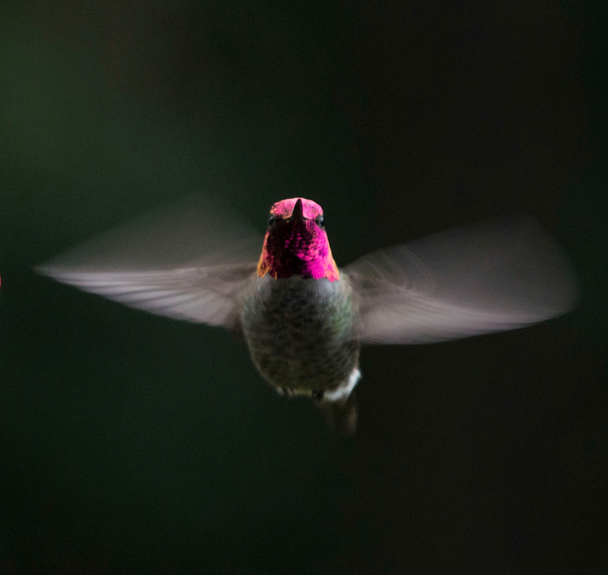

Colibrí: La joya de la naturaleza

¿Qué tipo de ave es el colibrí?
El colibrí es un ave perteneciente a la familia Trochilidae. Son conocidos por su pequeño tamaño, sus brillantes colores y su habilidad única para volar en cualquier dirección, incluso hacia atrás.

¿Por qué el colibrí es tan rápido?
Los colibríes tienen grandes músculos de vuelo, que están optimizados para un movimiento aeróbico rápido y sostenido. Pueden batir sus alas a más de 30 veces por segundo y generar fuerzas tanto con su trayectoria ascendente como descendente.

Un dato curioso
Se trata de una especie endémica de América, es decir, es propio del continente americano, no se encuentran en otra parte del mundo.